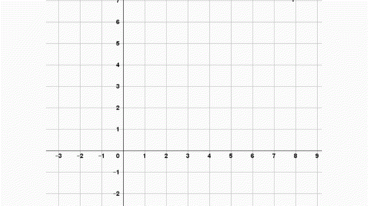

Tabla de contenidos
1. Introducción
Para estudiar ciertos fenómenos, en muchos casos alcanza con definir variables que involucren únicamente números (y a lo sumo alguna unidad de medida) como, por ejemplo, situaciones en las que intervienen el tiempo, o la temperatura, o la masa de los objetos.
En cambio, existen otras situaciones en las que es necesario considerar otras características, como por ejemplo la dirección o el sentido en el que una cierta magnitud acciona. Entre estas variables tenemos las fuerzas, los desplazamientos, la posición, la velocidad, etc.
En este libro nos introduciremos en los primeros pasos del tema vectores. Vamos a proponerles un texto, algunos videos y algunas actividades. Y al final de la semana la autoevaluación. Como siempre, tienen el foro Consultas y los encuentros presenciales para poder plantear sus dudas.
Recuerden que para navegar en este libro tienen la tabla de contenidos (que despliegan con la flechita oscura de la derecha) o las flechas de siguiente y anterior que están por encima de este texto.
2. ¿Qué es un vector?
Vamos a comenzar pensando en los vectores flecha. Para ello comenzaremos con la idea geométrica de vector con el siguiente video:

Es posible caracterizar† un vector a partir de lo que llamamos sus componentes. ¿Qué son las componentes de un vector? Pueden verlo en el siguiente video:
†Caracterizar significa dar condiciones necesarias y suficientes (generalmente, las mínimas posibles) de los objetos matemáticos de modo que los objetos que cumplen las características son los mismos que los objetos definidos. Por ejemplo, definimos paralelogramo como cualquier cuadrilátero que tiene dos pares de lados paralelos. Una caracterización sería: cuadrilátero que tiene dos pares de ángulos opuestos congruentes. Otra caracterización sería: cuadrilátero que tiene dos diagonales que se cortan por su respectivo punto medio. Las tres (la definición y las dos caracterizaciones) involucran propiedades de los objetos en cuestión que son equivalentes, es decir, definen al mismo objeto. O sea, únicamente los cuadriláteros que tienen dos pares de lados paralelos también tienen los ángulos opuestos iguales y todos ellos lo cumplen. De igual modo sucede con el cruce de las diagonales por sus respectivos puntos medios.
2.1. Norma y ángulo
También es posible caracterizar a un vector a partir de dos valores: la norma (o magnitud, o longitud) y el ángulo (o dirección).
En esta sección les proponemos que realicen la siguiente actividad:
Accedan a las páginas 220 a 223 del texto Grossman y Flores (2012) Álgebra lineal. Cap. 3. Pág 220 a 230 para ver las explicaciones y definiciones por escrito. Tomen nota de las definiciones de norma y dirección de un vector que allí se establecen.
Resuelvan algunos de los ejercicios del 1 al 16 de la página 229 del libro de Grossman y Flores y el ejercicio 1 de la Práctica adicional sobre vectores - parte 1.
Además, tienen una Resolución del ejercicio (13) de la página 20 de la Guía de Problemas. que involucra la noción de paralelismo de vectores.
3. Operaciones que involucran a vectores
Todo muy lindo, pero… se puede hacer cuentas con vectores. Es decir, ¿qué sería tener dos vectores y sumarlos? ¿Y restarlos? Es posible que, a partir de dos vectores, obtengamos el vector suma.
En las dos secciones siguientes veremos la suma y resta de vectores y la multiplicación por un escalar. En la última sección indicamos las actividades de práctica.
3.1. Suma de vectores
A continuación, presentamos el episodio II que intenta develar los misterios de la suma y la resta de vectores:
Además, pueden ver en el siguiente video cómo efectuar la suma a partir de las componentes.
3.2. Multiplicación por un escalar
Las dos operaciones del apartado anterior están definidas a partir de dos vectores y el resultado es un vector. Veamos el siguiente caso en el que tomamos un vector y un número real (un escalar) y al operar, asignamos al resultado un vector. En el primer video tendrán la idea gráfica y en el segundo, cómo proceder a partir de las componentes del vector. Además, en uno de ellos encontrarán cómo hacer para encontrar el punto medio de dos puntos.
3.3. Para practicar estas operaciones
Para practicar sobre estos temas pueden realizar los ejercicios 17 a 19 de la página 229 del libro de Grossman y Flores y los ejercicios 2, 3 y 4 de la Práctica adicional sobre vectores - parte 1.

4. Combinación lineal de vectores
Para entrar en este tema, les pedimos primero que trabajen con los problemas 16 y 17 de la página 12 de la Guía de problemas. Para trabajar con ese problema necesitarán el siguiente Archivo GGB tiro al blanco.
Una vez que intentaron pensar esos problemas, les pedimos que vean el siguiente video:
En la página 226 del libro de Grossman y Flores explican cómo expresar a cualquier vector de R2 como combinación lineal de los vectores unitarios i y j. ¿Quiénes son estos vectores? Les recomendamos que lean las explicaciones hasta la página 227.
Pueden realizar el resto de los problemas de Grossman y Flores (2012) Álgebra lineal. Cap. 3. Pág 229 a 230 y de la Práctica adicional sobre vectores - parte 1.
Les acercamos una Resolución del problema 39 de la página 229 del libro de Grossman y Flores en el que se buscan vectores unitarios con la misma dirección de otros vectores dados.
Y finalmente, les facilitamos una Resolución del ejercicio (19) de la página 20 de la Guía de Problemas. En ella verán una forma de saber si un vector es o no combinación lineal de otros dos.
5. Producto escalar (o producto punto o producto interno)
Para el caso de la suma entre vectores, partimos de dos vectores, y obtenemos como resultado de esa suma a un vector. En el caso del producto por un escalar, tenemos un número y un vector y obtenemos como resultado un vector. En este apartado trabajaremos con el producto escalar o producto interno entre vectores. En este caso tomamos dos vectores y obtenemos un número real.
En el siguiente video, se muestra cómo calcular el producto interno entre dos vectores de R2 y de R3.
Como dijimos, el producto escalar es una operación entre vectores que toma dos vectores y le asigna un número real (escalar) que resulta de hacer la suma entre las multiplicaciones componente a componente. ¿Para qué sirve? ¿Dice algo de los vectores? En el siguiente apartado podemos encontrar alguna respuesta a estas preguntas.
6. Ángulo entre vectores
¿Cómo podemos pensar el ángulo que forman dos vectores?
Pueden leerlo del complemento teórico que comienza en la página 29 de la Guía de problemas y se llama Ángulo entre vectores a partir del teorema del coseno y termina en la página 30; o verlo en el siguiente video:
¿Cúal es la definición de ángulo entre vectores que se da? ¿Cómo se muestra que tiene sentido? ¿Qué otras definiciones se retoman? ¿Qué propiedades aparecen?

Para consolidar estas nociones practiquen con los siguientes problemas y ejercicio:
De la Guía de problemas:
- Los problemas 26, 27, 28, 31, 33, 34, 36, 38 y 39. Comienzan en la página 15.
- Los ejercicios para practicar más (4), (5), (7), (8), (16). Comienzan en la página 18
Además, les acercamos el siguiente Video con una resolución del problema 33 de la Guía de Problemas.
Finalmente, a partir de la definición de ángulo entre vectores, es posible obtener el producto escalar de dos vectores de otra forma. Para enterarse, pueden ver el siguiente Video sobre otra forma de obtener el producto escalar de dos vectores.
7. Vectores en el espacio

Mucho de lo trabajado con los vectores de R2 es extrapolable a los vectores de R3. Te proponemos el texto de Grossman y Flores (2012) Álgebra lineal. Cap. 3. Pág 244 a 253 para revisar estos conceptos.
¿Qué conceptos importantes se introducen en el texto? ¿Pueden hacerse un resumen? Presten atención a las formas en que el texto resalta las definiciones, los teoremas, las observaciones, las fórmulas, etc. Leer un texto de Matemática es todo un trabajo. Entre otras cosas, leer un texto de Matemática requiere paciencia, papel y lápiz, revisar, retroceder, releer, reconocer la notación, consultar con otras fuentes, etc.
Para práctica tienen los ejercicios de las páginas 252 y 253 del libro de Grossman y Flores
Además, ponemos a dispoción dos textos con la resolución de dos problemas que involucran la noción de combinación lineal de R3:
8. Autoevaluación
Como parte de la evaluación continua (ver las condiciones en Condiciones de trabajo, de evaluación y de acreditación) les proponemos las siguientes autoevaluaciones:
Ingresen al cuestionario para ver la fecha de apertura y la de cierre.El puntaje que se obtiene en la autoevaluación solo debe tomarse como un porcentaje de resolución correcta. Esperamos que para cuando sea el momento de realizar las autoevaluaciones hayan podido realizar las actividades de práctica, realizado las Consultas, leído los textos y vistos los videos.